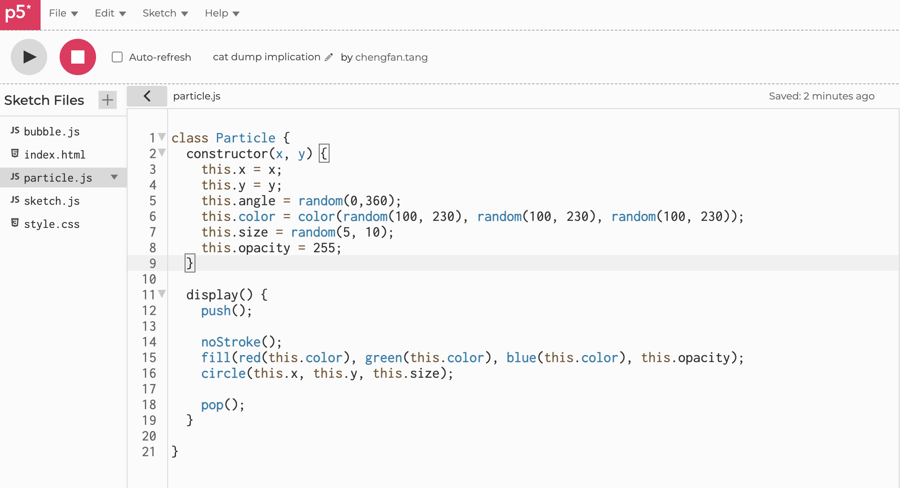
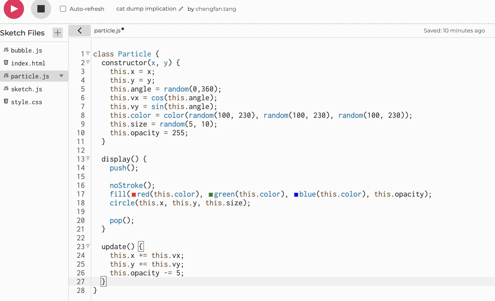
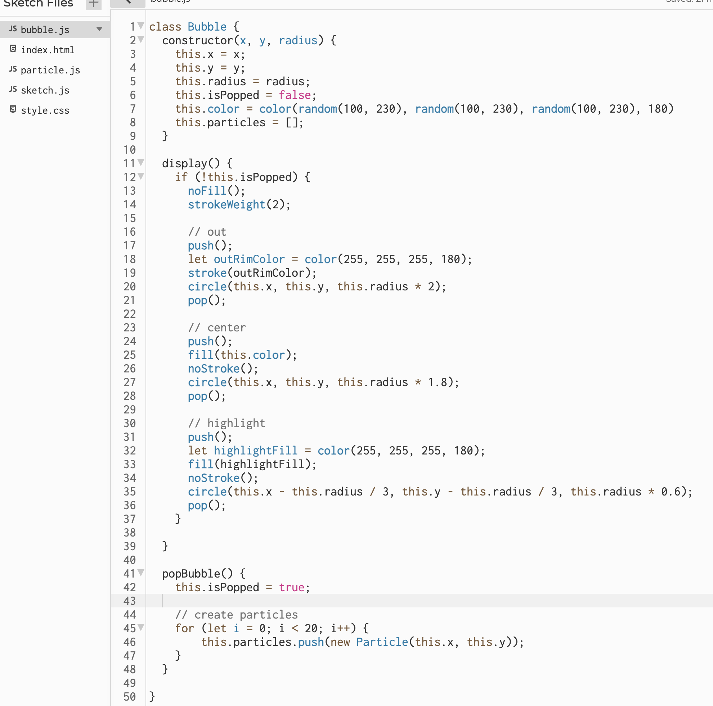
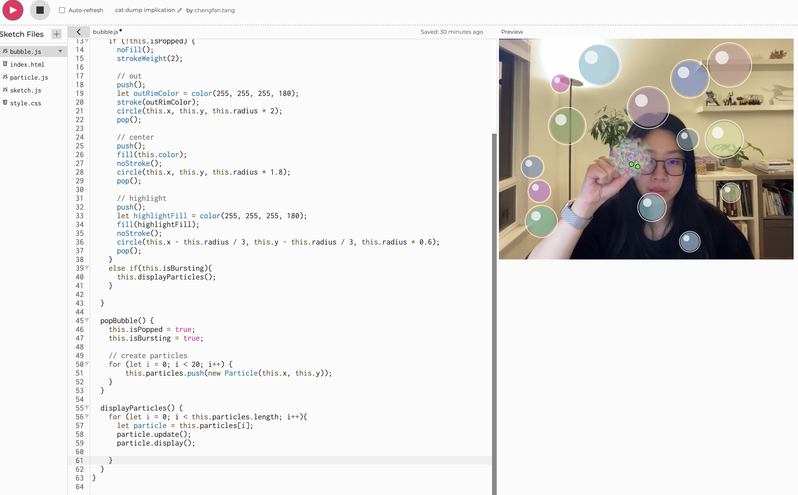
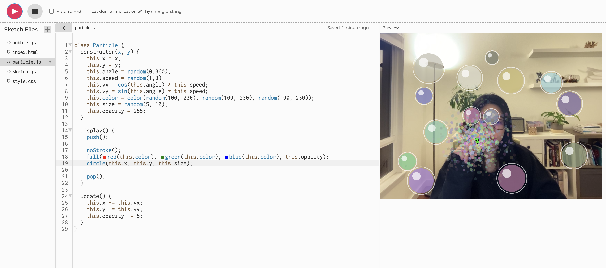
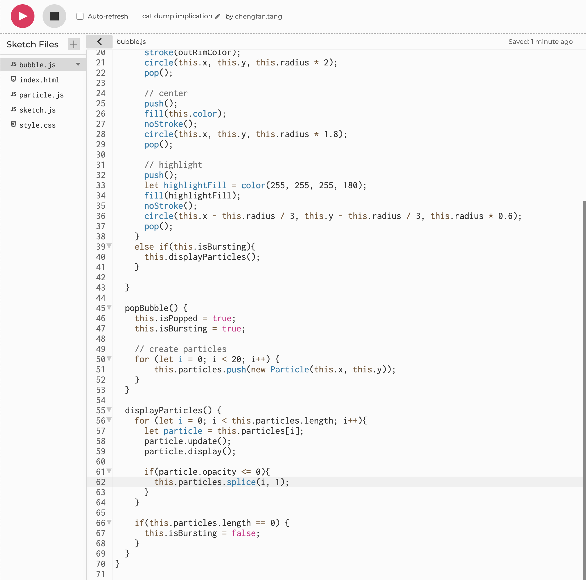
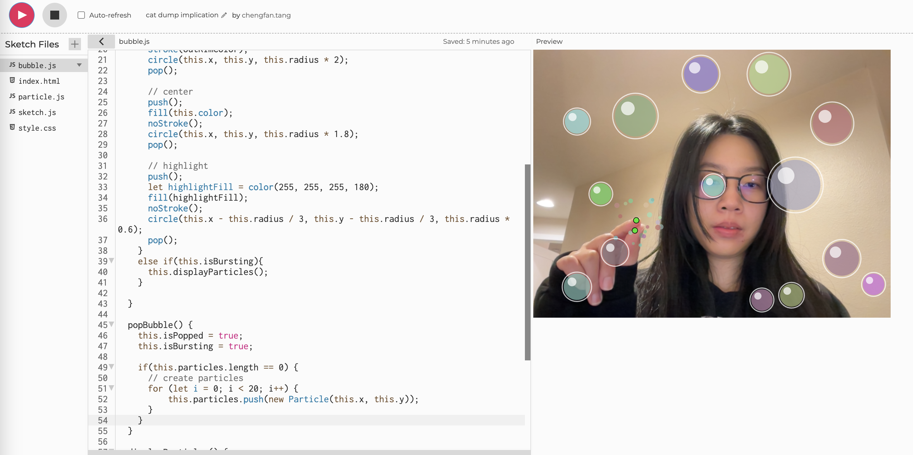

Bubble Popping v2
Process
1. The refinement focuses on the look and feel aspect of the interactive prototype. When the bubble burst, I want to play an animation where particles flys out from the center of the bubble and disappear in the air. The particles are nothing but small circles, each with their own color, opacity, size, position, and angle to fly outwards. My first step is to create a Particle class with these properties. I also need a display function to draw the particle on the canvas.

2. The overall animation should have many particles spawn in the center, then fly outwards in different angle. The opacity should decrease when moving and when the opacity is 0, the particle should disappear. When all the particles disappear, the animation is finished. In order to animate the particles, it should also have an update() function called in each draw(). Every time the update() is called, the position of the particle changes slighly, and the opacity should decrease a little bit. To figure out how much position should change, I used the cos() and sin() function to calculate the change in x and y based on the angle.

3. In order the create the particles and later show them, I need to create an array of particles to store them in the bubble class. The particles should be created at the center of the bubble when the bubble is popped.

4. When the bubble is popped, it should enter the bursting state so that the particles can be displayed instead of bubble when bubble.display() is called. So basically, if the bubble is popped, and the bubble is bursting, display particles. I need a new state to represent this bursting state. So I added a new state to the bubble class, and display particles accordingly.

5. The particles are created and displayed when popping the bubble, but there are some problems. First is that particles are flying out in a circle, which looks a little wierd. They should all fly out randomly. Since the angle is already random, I need to make them fly in different speed. To achieve this, I added speed property to the particle class and calculate the velocity with the speed.

6. Another problem is that a lot of particles are created and flying out, instead just the 20 I created. If I continue to pinch, the animation will keep going and doesn't stop. I think this is because I didn't delete the particles after they disappeared. So I added a check to delete the particles if the opacity is 0. Also, if all the particles have been deleted from the particles array, the bubble should no longer in bursting state anymore, which means end of the animation. I also need remove the bubble from the bubbles array.

7. However, after I did the above, something is still going on, infinite particles are flying out from the pinch gesture as long as I hold the pinch gesture. This was not expected. After long debugging, I realized that 20 new particles are created and pushed on to the array every time the popBubble() is called in the draw() function. Since the draw() function is call so many times a second, the popBubble() function will be called many times as well. A simple fix is to check if any particles has been created and stored in particles array before creating any particles. I added the if check in the popBubble() function. There is still a small problem where the particle animation is repeated a few times, but I think it is good enough.
Next Steps
I would like to add sound play while bursting the bubble and floating the bubble to make it more fun. Or the bubble pinching effect can go with anything that you want to delete, like to-do list.